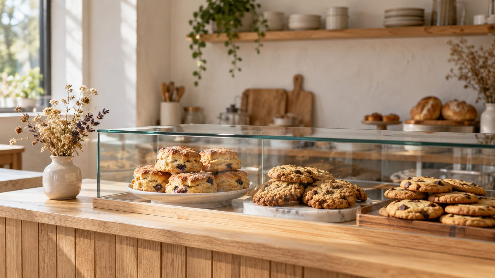
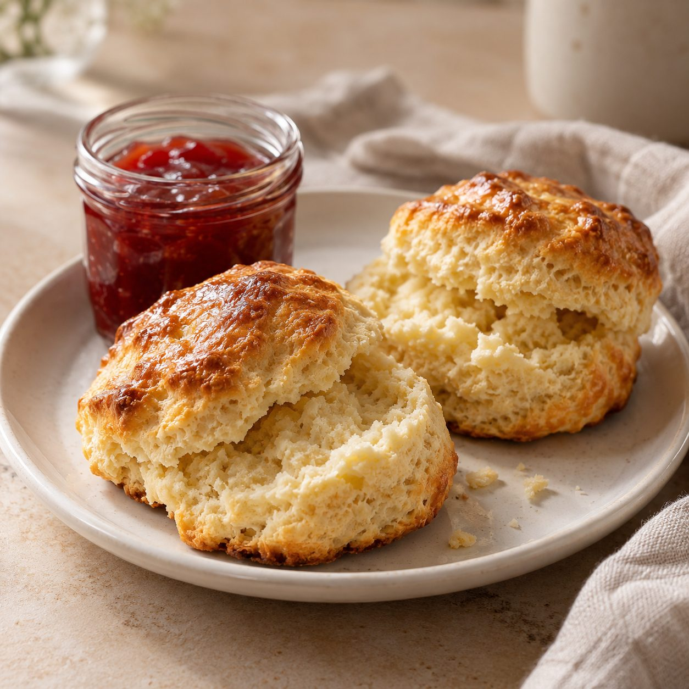
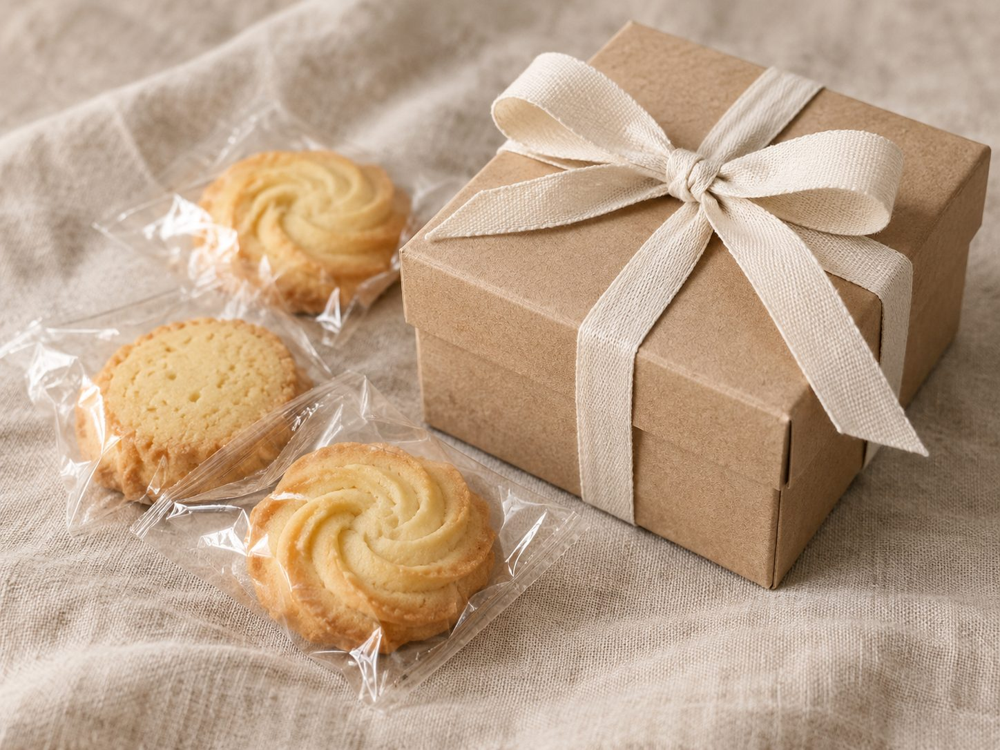

〇〇駅から歩いて3分の焼き菓子店
毎日たべたい、
毎日たべたい、
ふつうのおやつ。
国産の小麦と

朝10時、焼きたてから並びます朝10時、焼きたてから並びます店内 4席
- 営業10:00–17:00
- 定休日月曜・火曜
- 場所〇〇駅 東口から3分
まるまるの朝開店までの3時間半、
開店までの3時間半、
こうして焼いています。
特別な日のごちそうではなく、
6:30はかる
国産の小麦と、発酵バター
材料はできるだけ
7:15かたどる
ひとつずつ、手で
クッキーは

8:30焼き上がり
作りおきは、しません
焼きたての

10:00開店
手みやげの包装も
ちょっとしたお礼や
店主より
子どものころ、
あのころのような、
店主〇〇 〇〇
お店のこと
営業日・アクセス
営業日
- 営業時間
- 10:00–17:00売り切れしだい終了します
- 定休日
- 月曜日・火曜日
祝日は営業し、翌日に お休みをいただきます - お席
- 店内 4席
お持ち帰りだけでもどうぞ
アクセス
〒000-0000 〇〇市〇〇町5-6-7〇〇駅 東口から歩いて3分
- 〇〇駅の東口を出て、
大通りを まっすぐ北へ。 - ひとつめの信号、
郵便局の角を 右へ曲がります。 - 右手の2軒目、
緑の扉の白い建物が 当店です。
駐車場はありません。